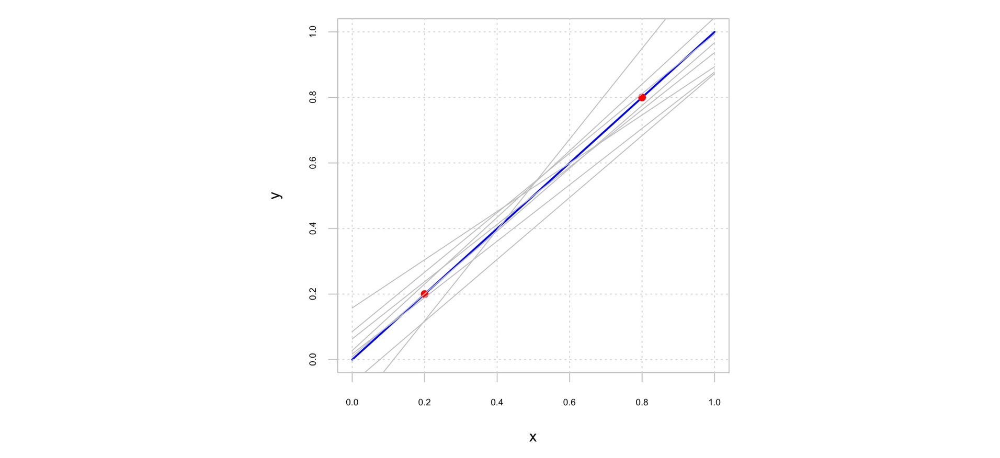
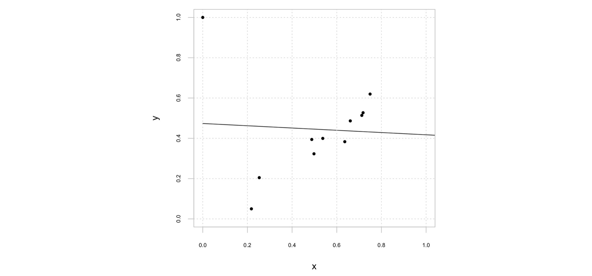

Regresión Lineal¶
30 min | Ultima modificación: Julio 11, 2019
Descripción del problema¶
Uno de los problemas fundamentales en customer analytics es el pronóstico del consumo del cliente a partir de información histórica con el fin de tomar decisiones relacionada con políticas como planes de fidelización.
Se desea construir un modelo que permita pronósticar el valor de \(y\) a partir del valor de \(x\). Se tiene un conjunto de 30 observaciones para construir el modelo de pronóstico.
[1]:
##
## Preparación
##
import pandas as pd
import numpy as np
import seaborn as sns
import matplotlib.pyplot as plt
%matplotlib inline
[2]:
from sklearn.datasets import make_regression
X, d = make_regression(
n_samples=100, #
n_features=1, #
n_informative=1, #
bias=0.0, # intercepto
effective_rank=None, # numero de vectores singulares para explicar los datos
tail_strength=0.9, # ? importancia relativa de las colas
noise=12.0, #
shuffle=False, # ?
coef=False, # ?coeficientes de la regresion
random_state=12136) #
plt.scatter(X, d);

Modelo de regresión lineal¶
En un modelo de regresión, la variable dependiente \(y\) es una función lineal de las variables independientes \(x_i\), tal que:
Donde:
\(y\) es la variable explicada.
\(x_i\) es la \(i\)-ésima variable explicativa del comportamiento de \(y\).
\(w_0\) es el intercepto del modelo.
\(w_i\) es el coeficiente de \(x_i\).
\(e\) es el error del modelo. Se parte del supuesto de que siguiendo una distribución normal con media cero y varianza \(\sigma^2\) constante y desconocida.
Estimación¶
En la siguiente figura se presenta de forma general la regresión de \(y_p = e + w_0 + w_1 * x_p\) para \(p\) = 1, …, 5. Los puntos negros representan los datos (las observaciones), y la línea negra representa la ecuación de regresión. Las líneas rojas representan el error \(e\) entre el valor observado de \(y_p\) y el pronósticado por el modelo para cada valor \(x_p\).

La estimación de los parámetros \(w_i\) del modelo se realiza por mínimos cuadrados ordinarios (OLS), o lo que es lo mismo, minimizando la suma de los errores al cuadrado (SSE)
Esto es, se deben encontrar los valores de \(w_i\) que minimicen:
para los \(P\) patrones de ejemplo.
La estimación de los parámetros del modelo minimizando el SSE supone que los errores siguen una distribución normal con media cero y varianza finita y constante.
Actividad.— Estime los parámetros del modelo de regresión usando el Solver de Microsoft Excel.
A continuación se realiza la estimación del modelo usando Python
[3]:
##
## Se usa la función LinearRegresion() para
## estimar el modelo de regresión lineal.
##
from sklearn.linear_model import LinearRegression
## Crea el modelo
linearRegression = LinearRegression(
fit_intercept=True, # ?intercepto (w0)
normalize=False, # solo para fit_intercept == False
copy_X=True # copia X o lo sobreescribe
)
## Calibra el modelo
linearRegression.fit(X, d)
## Imprime los coeficientes:
print('Coeficientes: ', linearRegression.coef_)
## Imprime el intercepto:
print('Intercepto: ', linearRegression.intercept_)
Coeficientes: [59.27425921]
Intercepto: -0.3900321834949718
Pronóstico¶
[4]:
df = pd.DataFrame(X, columns = ['x'])
df['d'] = d
df['y_pred'] = linearRegression.predict(X)
df.y_pred.head()
[4]:
0 -4.864184
1 14.699995
2 -99.846584
3 1.349368
4 -75.084778
Name: y_pred, dtype: float64
[5]:
##
## Gráfico del pronóstico
##
df.plot.scatter('x', 'd', color='black');
plt.plot(df[['x']].values, df.y_pred, color='red');

Efecto del ruído cuando hay pocos datos¶
Cuando existen pocos datos, la estimación del modelo es altamente sensible a los datos usados para su ajuste. En la figura de abajo, se tiene los datos sin ruido (puntos rojos) y la predicción de varios modelos lineales que difieren en los datos de entrenamiento; para variar los datos, se tomaron los valores de \(X\) de los puntos rojos y se adicionó ruido aleatorio. Una vez se estimó el nuevo modelo se procedio a graficar su predicción (líneas grises). Como se observa, pequeñas variaciones en \(X\) causan cambios muy importantes en el modelo estimado y consecuentemente cambios no despeciables en los pronósticos realizados.

Efecto de outliers¶
Uno de los principales problemas de la regresión lineal es el efecto de los outliers. En la figura de abajo se presenta la recta de regresión lineal estimada para una muestra de diez puntos. En ella se observa que la recta de regresión sigue la tendencia de los puntos.

En la siguiente figura se presenta el mismo caso anterior, pero se adicionó un punto en las coordenadas (0, 1), que corresponde a un outlier. En la figura que sigue se observa como la recta de regresión gira hacia el punto.

Esto se debe a que en la estimación de los parámetros del modelo de regresión lineal se minimiza la suma de errores al cuadrado:
la cual se ve influenciada por valores del error muy grandes, como en el caso de los outliers.
Para resolver este problema, los parámetros del modelo pueden ser estimados minimizando otras medidas de error, como por ejemplo, la desviación media absoluta:
Actividad.— Estime nuevamente el modelo minimizando la desviación media absoluta.